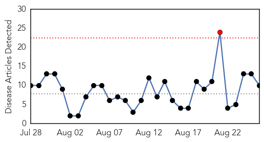
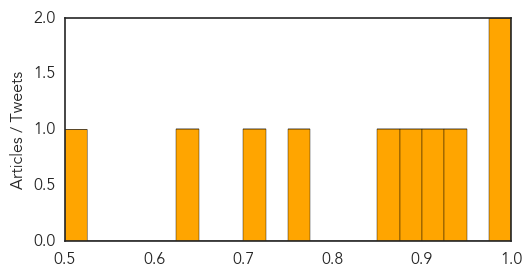
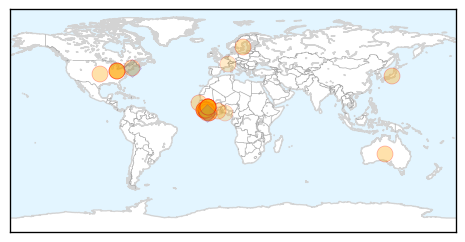

West Nile Virus
30-Day Web Trend
1 alerts, 0 warnings

30-Day Twitter Trend
0 alerts, 0 warnings

Article Locations

Article Confidences
Top Articles:
- 0.984
- Virus-carrying mosquitoes found in Goshen
- 0.975
- Montana reports first human case of West Nile Virus for 2015
- 0.927
- Mosquitoes Test Positive for West Nile Virus in East Haven
- 0.918
- Dallas County reports first West Nile death
- 0.878
- Mississippi confirms 2 new cases of West Nile
- 0.867
- Mosquitoes test positive for West Nile Virus in Falmouth, Hyannis
- 0.765
- Seasonal upswing of West Nile Virus-positive mosquitoes prompts recommendations from health officials
- 0.702
- The City of Dallas reports first West Nile Virus death
- 0.643
- Health department urges residents to be vigilant against mosquitos
- 0.503
- Costa Rica begins fumigating planes at international airports to halt spread of animal disease -The Tico Times
Top Tweets:
-
No tweets found for Aug 26, 2015
Ebola
30-Day Web Trend
1 alerts, 0 warnings

30-Day Twitter Trend
0 alerts, 0 warnings

Article Locations
Article Confidences

Top Articles:
- 1.000
- First Week With No New Ebola Cases
- 1.000
- First Week With No New Ebola Cases
- 1.000
- Sierra Leone celebrates milestone on road to ending Ebola - Sierra Leone
- 1.000
- Sierra Leone: Sierra Leone celebrates milestone on road to ending Ebola
- 1.000
- Ebola News: Deadly Virus Reappears in Liberia, Claims Life of Teenager
- 0.999
- Sierra Leone's last known Ebola patient leaves hospital
- 0.999
- Sierra Leone Discharges Last Ebola Patient
- 0.999
- New Ebola outbreak cases stay at three, limited to Guinea
- 0.999
- Sierra Leone discharges last Ebola patient
- 0.999
- Liberia has second confirmed Ebola case
- 0.998
- Celebrations at Treatment Center as Sierra Leone Declared Ebola Free
- 0.998
- As Sierra Leone waits for Ebola all-clear, its emotional scars will take longer to heal
- 0.993
- Recovery, Hope as Sierra Leone battles effects of Ebola
- 0.993
- US military to put up tent at Liberia Ebola clinic
- 0.991
- Ebola concerns emerge in Columbus
- 0.991
- Ebola concerns emerge in Columbus
- 0.990
- WHO to Study Use of Sanctions to Punish Countries as Part of Global Epidemic Response
- 0.987
- WHO to study use of sanctions as part of global epidemic response
- 0.987
- Sierra Leone's Last Ebola Patient Released, But Nation Not Yet 'Ebola-Free'
- 0.980
- Sweden hit with double-whammy Ebola scare
- 0.979
- Boston Physician Starts Campaign for Ebola Health Workers
- 0.979
- Sierra Leone: WHO Ebola Situation Report - 26 August 2015
- 0.975
- Sierra Leone releases last known Ebola patient
- 0.967
- [Video] Quick, paper-based Ebola test may help diagnosis in remote areas
- 0.961
- Columbus Public Health: Patient Has Other Illness, Not Ebola
- 0.957
- WHO 'could use sanctions' to fight Ebola
- 0.953
- Political challenges, not just scientific ones, shape response to epidemics
- 0.918
- NATCOM all set for Big Data & Ebola International Meet
- 0.850
- Who Supports Epidemiology Training
- 0.840
- Church in Sierra Leone reacts to Ebola milestone Vatican Radio
- 0.792
- West and Central Africa Region Weekly Humanitarian Snapshot 18 – 24 August 2015 - Mali
- 0.751
- Helping farmers prevent hunger in Ebola-hit countries
- 0.655
- 93 Days: Filmmakers narrate complexity of Ebola in new movie
- 0.632
- WHO: Work Underway to Better Respond to Global Epidemics
Top Tweets:
- 0.939
- Experimental post-exposure antiviral treatment may protect humans from Ebola virus - Medical Xpress http://t.co/iwrKrXW5Mg ebola EVD
- 0.890
- Antiviral-based therapies have potential to protect humans from deadly Ebola virus - News-Medica http://t.co/xXidJhACFZ ebola EVD
- 0.859
- Why Sierra Leone's “last” case of Ebola may not be its last - Quartz http://t.co/c5wkcn9asq ebola EVD
- 0.859
- Why Sierra Leone's “last” case of Ebola may not be its last - Quartz http://t.co/UNlcStpPjQ ebola EVD
- 0.778
- Epidemiological features and trends of Ebola virus disease in West Africa http://t.co/oH2xV3sBBA
- 0.758
- .@HealthCommCap & @Internews spread accurate information about Ebola to combat fear caused by the virus in Liberia http://t.co/GTa5mCISxP
- 0.733
- Global health rules need teeth: Ebola panel chief - Politico http://t.co/HGngJZCKZW ebola EVD
- 0.701
- Sierra Leone released its last known Ebola patient. Now nation begins 42-day countdown to be considered Ebola-free http://t.co/a0rKLaDu0c
- 0.701
- RT: Only new ebola cases in W Africa were from Guinea last wk all 3 from Conakry and have high exposure risk per WHO htt…
- 0.635
- Ebola response panel studying ways to enforce compliance with key UN legal ... - UN News Centre http://t.co/Io8wWbwm7o ebola EVD
- 0.621
- « Je suis en effet une survivante d’Ebola. Malgré la stigmatisation je… https://t.co/eLxUG7s6r8
- 0.613
- Woman being treated at Grant hospital; no Ebola test planned for now - Columbus Dispatch http://t.co/URCLEAqdpw ebola EVD
- 0.594
- 93 Days: Filmmakers narrate complexity of Ebola in new movie - The Nation Newspaper http://t.co/uwb7X7PmjB ebola EVD
- 0.582
- Ebola virus disease: Effects of respiratoryprotection on healthcareworkers http://t.co/FT46Mwt8TJ